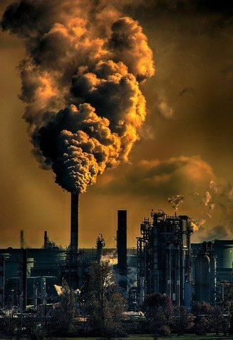
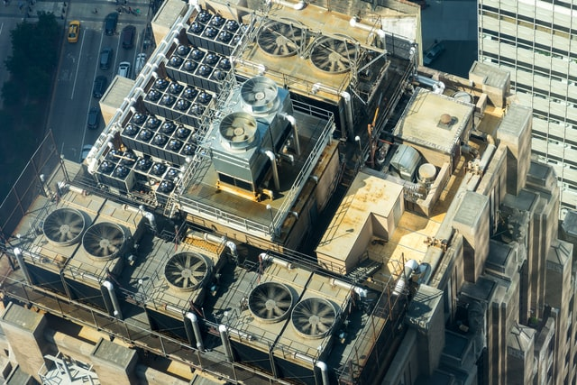

Les solutions envisagées et envisageables
Pour diminuer la pollution numérique, il existe plusieurs solutions. Les grandes entreprises de ce monde essaient déjà de réduire cette pollution mais les utilisateurs du web peuvent également participer à la diminution de cette pollution en réalisant certaines tâches.
Nous voici au moment où l’on souhaite que toute pollution disparaisse et que la planète ne soit plus polluée. Mais malheureusement, il est trop tard, les impacts écologiques commencent à dégrader notre planète. Et la consommation électrique ne fait qu’augmenter à cause d’une demande beaucoup trop importante. Les datacenters font partis de cette demande et elle sera de plus en plus importante chaque année.
Mais nous, utilisateurs du web, pouvons diminuer cette demande énergétique qui ne fait qu’augmenter au fil des années. Vous vous dites sûrement « Comment ? », et bien c’est ce que nous allons voir. La réponse que les médias peuvent possiblement donner est « limitez-vous à seulement 2 ou 3 heures votre utilisation d’Internet par jour ». Mais si vous êtes comme moi, et que vous utilisez Internet pour vos études, ou bien même pour votre travail ou en tant que divertissement, cette réponse risque de ne pas vous plaire.
Commençons par les mails, chose utilisée par tous. Par exemple, vous pouvez trier vos mails et garder seulement les plus importants car chaque mail fait fonctionner des serveurs, qui scannent ces derniers en permanence. Mais si vous êtes comme moi, que vous triez très rarement vos mails et que vous recevez énormément de pubs, alors désabonnez-vous des newsletters inutiles qui polluent votre boîte. En faisant cela, cela permettra de rentrer dans le premier exemple. En plus de ces deux solutions très simples à faire, vous pouvez également compresser des pièces jointes et envoyer des photos basse résolution pour limiter le poids du mail.

Même en faisant ces petites astuces, la pollution numérique risque de baisser que de très peu. Et donc c’est pour cela que je vous donne une deuxième astuce ! Cela se concentre sur les recherches Google. Premièrement, vous pouvez prendre le temps pour bien formuler vos recherches et ainsi, ne pas en refaire plusieurs derrières parce que vous n’aurez pas trouver l’information que vous recherchiez. Deuxièmement, vous pouvez éviter de tout garder sur votre Cloud, garder seulement les éléments les plus importants. Et dernière astuce, vous pouvez enregistrer les sites que vous utilisez souvent dans la barre de favoris. En faisant cela, cela évitera de faire une recherche pour un site que vous utilisez tous les jours.
Parlons maintenant de quelques solutions employées pour limiter la pollution numérique par les grandes sociétés de notre monde. Commençons par Google qui ont placer un datacenter dans un pays froid, nommée la Finlande, afin de ne pas utiliser de système de refroidissement. Microsoft a opté pour placer un datacenter sous la mer pour que le système de refroidissement soit l’eau glaciale de la mer. En France, on utilise la chaleur émise par les datacenters pour chauffer des HLM. On peut retrouver ce moyen à Paris et en Gironde.
Pour économiser l’énergie, certaines entreprises (telles que Apple, Facebook, Amazon) utilisent les énergies renouvelables pour alimenter les datacenters. Grâce à une gigantesque installation solaire privée, Apple a presque réussi à atteindre les 100% d’alimentation à l’énergie renouvelable pour ses datacenters.
Autre solution utilisée est l’utilisation des IA pour automatiser les opérations des datacenters. En effet grâce à cela, plus besoin de techniciens en qu’à de problèmes sur les datacenters. Donc l’absence d’êtres humains dans la structure permettrait d’augmenter la température et l’humidité du complexe, ce qui permettrait de diminuer les besoins en refroidissements.

Dernière solution qui est l’utilisation des dernières technologies de construction pour les bâtiments qui accueillent les datacenters. Ces bâtiments sont appelés des «Datacenters hyperscale». En transférant les datacenters dans ces bâtiments, leur consommation d’énergie pourrait diminuer de 25%.
Vous voyez, si tout le monde réaliserait ces choses, la pollution numérique ne représenterait plus 50% des gaz à effets de serre mais sûrement moins.